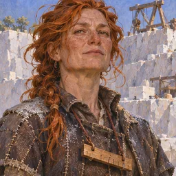
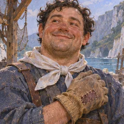

При обвале в Белокамье кто-то попросил новое божество оживить высеченного в скале кита и вынести людей. Кит поднялся в воздух. Спасённые машут с его спины, а по площади уже ползёт вмятина в форме огромного плавника. Предстоит понять, куда уходит тяжесть чуда, забраться на летающего великана и выбрать следующую просьбу, которую вы готовы осуществить своими руками.

Если партия изменила план
Перед чтением вступления сверьте место героев, присутствующих людей и предметы с итогом прошлого вечера. Если условия встречи отпали, сыграйте последствия там, где находится партия. Событие по расписанию может произойти за кадром. Герои узнают о нём от тех, кто был на месте.
Вечер 7. Если герои оставили кита на каменном ложе
Отложите попытку большого перехода. Спросите, кто останется следить за светом и кто вернётся к людям с вестью. В последней сцене покажите лишь видимые перемены и оставьте людям право спорить о том, каким могло стать чудо.
Группа отказалась от задания
Нового чуда не просим. Освободим настил и поможем тем, кто уже пострадал. Принимаем людей у безопасного выхода из галереи. Площадка за оградой пуста, кит продолжает двигаться. Спасение людей не превращает их в последователей.
Игроки раскрыли тайну раньше
Расспросим слышавших слова над обвалом и проверим вес под лампой на доступном обломке. Доступные свидетельства — Слова над обвалом, Вес под лампой. Нев облегчил кита по просьбе о спасении. Перенесённая тяжесть давит через его тень. Повторяем пробу под другой лампой и отмечаем, куда приходится вес. Первое чудо действительно облегчило кита и спасло людей; теперь проверяем, куда делась тяжесть. За следующий опыт отвечают добровольцы.
Партия уступила поле
Каменные ласты разбили настил, прежняя переправа потеряна. Считаем вышедших и спрашиваем о рабочем, оставшемся у настила. Отмечаем место обвала и уводим людей вдоль берега. Новый путь проверим отдельно; прежний не выдержал.
За десять минут до первой игры
- Откройте первый вечер, прочитайте правду мира и участников. Остальные вечера — планы, их исход решают игроки.
- Выберите пакет под фактическое число игроков. Первые три героя — готовое ядро; остальные добавляются по порядку. Возраст игрока не определяет героя.
- Согласуйте темы, длительность и сигнал паузы. Передайте игрокам только players.html; раздатки выдавайте по отдельности после указанного открытия.
- Откройте Мастерскую проекта, создайте личный черновик и импортируйте выбранный JSON через загрузку пакета. Проверьте состав и начало в предпросмотре. Запуск кампании подтверждает ведущий штатным действием.
- Откройте иллюстрацию завязки отдельно. Портреты героев входят в файл для игроков, портреты встречных — в книгу ведущего. Тактические схемы доступны в разделе карт.
Формат и темы
8 вечеров; 180 минут: 15 минут на открытие и пересказ, три сцены по 45 минут, 10 минут перерыва, 20 минут на последствия и закрытие. Внутри истории восемь встреч занимают три дня; переходы времени объявляет ведущий.
Белокамье — город камнерезов над сухой котловиной и морским заливом. Здесь вырезают лестницы прямо в скалах, а праздничные паруса сушат между башнями. В пустом постаменте появился Нев, похожий на человека из белой глины. Он знает, что хочет помогать, но ещё не видел последствий собственных чудес. Религии реального мира не используются. Герои — обычные поддерживаемые классы третьего уровня; их умения и заклинания не изменены.
Большое чудо на расстоянии вытянутой руки, риск без жестокости, деятельное сочувствие, юмор камнерезов и серьёзные материальные последствия.
- Помощь и причинные последствия
- Познание через действие
- Жизнь, возникшая непреднамеренно
- Смелость исправлять собственное решение
- Новая красота с материальной ценой
Границы
- 14+: угроза падения, повреждение домов, тревога за большое животное. Без подробных травм, сексуального материала, истязаний и конфликта реальных религий.
- До начала каждый может назвать нежелательные темы письменно или вслух. Слово «пауза» останавливает сцену; игрок не обязан объясняться. Повреждение живого камня описывается трещинами и звоном, без телесного ужаса.
- Гибель детей, жестокость к животному и принудительное религиозное обращение исключены. Неудачи стоят времени, вещей, доступа и труда; опасные спасения допускают уход.
- Чудеса описывают вымысел. Изменение канонического состояния, правила и выдачу знаний разрешает ведущий обычными средствами приложения; просьба к Неву ничего не исполняет автоматически.
Люди за столом
- В группе всегда 3–8 игроков плюс отдельный ведущий. Первые три героя образуют полноценное ядро; выбор класса, заклинания или героя на дополнительном месте не открывает обязательный путь. Любой герой может наблюдать, предложить просьбу, удерживать канат или говорить с Невом.
- На каждой сцене меняйте первого говорящего. Подросток и взрослый получают одинаковое право на решение; возраст не назначает лидера, класс или сложность роли. Разрешены письменное предложение, устный ответ и пас без потери последующего хода.
- Для каждого задания давайте два равноценных входа: конкретное действие с предметом и более глубокий вопрос о последствиях. Не поручайте взрослым объяснять подросткам «правильную мораль». Уточняйте практическую цену, затем принимайте общее действие без обязательного голосования.
- При разделении назначьте видимую точку возврата: два действия каждой подгруппы, затем общий кадр. Никогда не оставляйте одиночного игрока вне сцены дольше пяти минут. Успех одной линии меняет положение другой; одинаковый бросок не повторяется восемью людьми.
- У отсутствующего героя остаётся добровольная безопасная работа на берегу; ведущий не принимает за него личную просьбу и не раскрывает его чувства. Его сведения доступны через предмет, наблюдение или НИП. На возвращении игрок получает краткий перечень видимых последствий.
- Каждую просьбу записывайте буквально вместе с объектом, местом, доступной материей и ожидаемой ценой. Нев заранее говорит, что понял, и что проверить не может. Не наказывайте оговорки: опасность следует из установленных свойств, а не из придуманной задним числом двусмысленности.
- Не продвигайте солнце или полёт по реальным минутам обсуждения. После обозначенного действия ведущего сообщает новое положение. Перерыв не ухудшает ситуацию. Перед закрытием спросите у каждого, что его герой заметил и какую цену считает своей.
Масштабирование группы
3 игрока
Три линии: контакт с китом, наблюдение за тенью, работа с путём. Выполняйте их по очереди одним составом; НИП удерживают уже закреплённые канаты и не принимают решений. Все ключевые сведения открыты первым трём героям.
4 игрока
Четвёртый игрок ведёт связующую линию: передаёт сигналы и проверяет просьбу на малом обломке. На следующей сцене меняйтесь; эту задачу может взять любой герой.
5 игроков
Разделение 3+2: спина кита и земля. После двух действий каждая группа сообщает наблюдаемое изменение; встреча у сигнального полотнища обязательна внутри сцены.
6 игроков
Две тройки действуют попеременно: управление полётом и освобождение тени. В каждой тройке отдельно предложите наблюдение, физическое действие и разговор. Не повышайте DC за число игроков.
7 игроков
Состав 3+2+2: кит, свет, путь. Дайте каждой линии отдельную полезную находку и общий момент возврата после двух действий. Седьмой участник получает собственный выбор цены, не роль помощника ведущего.
8 игроков
Четыре пары: контакт, свет, поверхность, связь. Проводите круг коротких заявок, затем разрешайте совместный результат. На второй сцене роли меняются; финальную просьбу может предложить каждый письменно или вслух.
Первое чтение вслух
Белокамье стоит на белых уступах над сухой котловиной, и всё здесь вырезано из одного камня: лестницы, перила, водостоки, даже скамьи на площадях. Камнерезы говорят, что город не строили, а доставали из скалы, как ядро из ореха. Между башнями сушат праздничные паруса, за котловиной синеет морской залив Тихий Зев, а со склонов смотрят в небо резные звери — работа десяти поколений артелей. Самым большим из них должен был стать кит. Его рубили в скале над карьером несколько лет и так и не успели доделать хвост. Сегодня рабочая галерея над карьером рухнула. Спасённые рассказывают об этом наперебой и сами ещё не верят: кто-то из рабочих в белой пыли попросил новое божество оживить кита и вынести людей, и каменный великан выдохнул пыль и поднялся из скалы вместе с ними. Теперь он медленно поворачивается над крышами — величиной с башню, белый, с недорубленными звёздами на боках. На его спине люди размахивают рабочими платками. Каменный плавник заслоняет солнце, и на площадь Белого Полотна ложится прохладная тень, пахнущая мокрой известью. Где-то звенит упавшая чаша. Под вами вдруг лопается плитка — ровно по краю тени, с сухим щелчком, как лёд на реке. Посреди площади стоит постамент, сорок лет простоявший пустым: совет так и не решил, чью статую на нём поставить, и камнерезы шутили, что он ждёт того, кто придёт сам. Теперь на нём стоит белая фигура, похожая на человека из сырой глины, с тонкими линиями на ладонях, как следы мокрой кисти. «Я помог, — говорит она. — Почему земля теперь прогибается?»
Правда мира · только ведущему
- Первое чудо было искренней помощью: Нев оживил незавершённого кита, облегчил его и спас людей из рухнувшей рабочей галереи. Никто не устроил обвал ради чуда. Прошлое не переписывается; спасение уже случилось, дальнейшие исходы ещё нет.
- Облегчение не уничтожает массу: снятый вес давит на первую твёрдую поверхность в тени предмета от самого сильного направленного света. Вода пропускает эту тяжесть до дна. Смена источника света перемещает давление; рассеянный свет даёт широкую слабую тень. Полная темнота возвращает вес самому предмету. Это описательное волшебство для решения ведущего, без новой автоматической системы физики.
- Чудо касается исходного камня кита и его отколотых частей, не заражает другую материю и не умножает вес. Увезённая щебёнка объясняет отдельные провалы во дворах. Три независимых пути к закону тяжести: опыт с обломком и лампой, сопоставление следов тени с осмотром площади, показанное Невом воспроизведение первого движения. Ни один не требует удачного броска.
- Кит стал самостоятельным живым существом, а не пустым движущимся изваянием. Во время четвёртой встречи герои могут подтвердить это через заживление камня, дыхание и реакцию на их вмешательство. Нев может вернуть телу вес, но не сделать пережитую жизнь небывшей и не гарантирует, что тяжёлое тело выдержит падение. Кит чувствует прикосновение, свет и звук, но не понимает речи и не знает чужих секретов.
- Нев умеет только продолжить наблюдавшееся чудо: при прикосновении вернуть конкретной части вес либо переложить её вес в собственную тень; придать тому же камню показанную простую форму, сохранив вещество. Он не создаёт решения, знания, материю, прошлое, новые силы героя или обещание безопасности. Первое оживление он не умеет повторять по заказу. Просьбу без понятного действия и предмета он просит показать физически.
- Кит ищет простор и отвечает на низкое гудение, отражённое светом движение и мягкое давление на плавник. Это поведение, а не приказ. Сильный испуг ведёт его к ближайшему открытому пространству: сначала к карьеру, затем к морю. На закате второго дня отражатель в Каменном Глазу направит яркий луч над городом; его положение известно заранее и его можно изменить обычной работой.
- Одна большая просьба в середине истории оставляет след в финале: возвращённый хвост помогает рулить, но требует опоры; изменённый плавник позволяет тормозить, но ослабляет набор высоты; отказ от преобразования сохраняет манёвренность и требует больше труда с освещением. Нельзя назначить игрокам изменение за них. Финал допускает морской полёт, полную посадку с ногами или плавучее тело; цену и доступную материю ведущий объясняет до выбора.
- Финальные расходы физические и наблюдаемые: морскому полёту нужны свободная полоса тяжёлой тени и проверенное ночное ложе выше прилива; ходящему киту — прочное широкое основание; плавучему телу — большой объём и безопасное вытеснение воды. Масла хватает только до объявленной посадки. Удачный план вправе уменьшить цену. Никакого скрытого равновесия страданий, сверхъестественного долга или обязательной жертвы нет.
Восемь вечеров
- 1. Тень тяжелее неба — Вывести людей из движущейся полосы давления и получить первое проверяемое объяснение чуда.
- 2. Спина, которой не было — Осмотреть доступ к киту и проверить пределы переноса веса на безопасном малом образце.
- 3. Куда уехала тяжесть — Устранить отдельные последствия вывезенного камня и подготовить место, где кит безопасно переживёт ночь.
- 4. Камень отвечает — Подтвердить самостоятельную жизнь кита и провести первое большое вмешательство, оставляющее реальную разницу в финале.
- 5. Три поверхности — Проверить реальные поверхности и формы для трёх возможных исходов, не назначая кита чьей-либо собственностью.
- 6. Когда луч выбирает землю — Провести большой световой манёвр и проверить, как решение середины кампании меняет действия на земле и на спине.
- 7. Цена показанного чуда — Превратить выбранный исход в проверяемую просьбу, подготовить материальную цену и точку прекращения вмешательства.
- 8. Тяжесть следующего шага — Исполнить конкретный выбранный манёвр, разрешить видимые последствия и дать каждому герою собственный эпилог.
Места
Белокаменная котловина
Огромная чаша из белого известняка: уступы спускаются от сухих выработок к тёмно-синему морскому заливу, и на каждом — мастерские, широкие террасы и резные звери, которых артели вырубают прямо в скале уже десять поколений. В полдень камень слепит глаза, а к вечеру розовеет. Эхо здесь долгое: окрик с верхнего уступа слышно у самой воды.
Площадь Белого Полотна
Рыночная площадь, где торгуют парусами, каменными чашами и инструментами, а над прилавками на шестах сушат белые полотнища — от них площадь и получила имя. В центре стоит постамент, сорок лет простоявший пустым, рядом — фонтан с каменными рыбами и длинные скамьи. Плиты мостовой здесь толстые, старые, гладкие от тысяч ног.
Галерея Уходящего Кита
Остаток рабочего настила висит над карьером на уцелевших балках и канатах. В скале зияет огромная выемка — точный оттиск китового бока с недорубленными звёздами по краю, — а вокруг лежат свежие белые обломки, брошенные зубила и верёвочные лестницы. Пахнет каменной пылью и мокрой пенькой, ветер посвистывает в пустой форме.
Спина Белого Кита
Покачивающаяся каменная поверхность, тёплая на солнце и прохладная в желобах. По ней тянутся широкие рабочие желоба, резные звёзды, которые камнерезы не успели дорубить, и недоделанный хвост, грубый, как заготовка. Под ногами иногда отдаётся медленный низкий гул. До земли отсюда очень далеко: крыши Белокамья кажутся рассыпанными кусочками сахара.
Двор ста ламп
Мастерская отражателей во дворе за высокой стеной: длинный стол, ширмы из промасленной ткани, масляные лампы всех размеров и старая подъёмная рама, на которой поднимают зеркала. Пол выложен толстыми плитами, закопчёнными у очага. Имя двору дали не для красоты: в праздничную ночь здесь действительно зажигают сто ламп, по одной на каждую городскую лестницу.
Каменный Глаз
Открытая башня на краю котловины с большим полированным отражателем, который каждый день вручную разворачивают на рукоятях, чтобы направлять свет в мастерские. С её площадки видны море, крыши города и вся сухая чаша карьера. Отражатель прозвали Глазом за то, что его блеск видно с любого уступа Белокамья.
Склон гудящих чаш
Пологий склон, уставленный каменными чашами разной величины — от ведра до телеги. Камнерезы испытывают их ударом деревянной колотушки: хорошая чаша гудит низко и ровно, треснувшая дребезжит. Низкий звук долго идёт между белыми стенами котловины, и по старой привычке так перекликаются артели на дальних уступах.
Синий сад
Небольшой сад красильных деревьев у нижнего спуска: кора и листья дают синюю краску для парусов, и у садовников ладони синие до запястий. Между стволами на рамах сушат ткань, пахнет мокрой листвой и кисловатой краской, а в открытом канале бежит вода для мастерских. Самые ценные, маточные деревья растут в больших кадках.
Чаша открытого карьера
Широкое дно выработки, окружённое ступенчатыми уступами, как чаша амфитеатра. Здесь лежат груды негодного камня, рамы грузовых подъёмников и свёрнутые штормовые паруса, а по краям пробивается жёсткая трава. Камень тут добывают двести лет, и на дне всегда кто-нибудь работает — только сегодня здесь непривычно тихо.
Тихий Зев
Узкий морской залив между двумя белыми мысами, похожий на приоткрытую пасть, — отсюда и имя. У него прочное каменное дно, старый погрузочный бассейн, куда лодки заходят за камнем, и низкие деревянные пристани, пахнущие солью и смолой. Во время отлива видны гряды моллюсков, а в спокойной воде отражаются башни.
Нев

0 лет. Человеческая фигура из белой глины, размером со взрослого; на ладонях остаются тонкие линии, как следы мокрой кисти. Недавно появился в пустом постаменте. Говорит просто, внимательно смотрит на показываемые предметы и уже помог людям при обвале.
Место: Площадь Белого Полотна
Намерение
Понять наблюдаемые последствия первой помощи и выполнить следующую конкретную просьбу без обещания всеведения.
Собственные знания
- Орсат попросил оживить вырезанного кита и вынести рабочих.
- Он облегчил конкретный камень кита; перенесённая тяжесть не исчезла.
- Он способен вернуть вес части при касании и изменить форму той же материи по показанному образцу.
- Он не умеет отменить чью-то жизнь или заранее видеть все последствия.
Секрет или личное убеждение
Он помнит, как перенёс тяжесть камня на его видимый силуэт, полагая, что нашёл свободное место. За стены рабочей площадки он не выходил; собственных наблюдений за морским дном у него нет.
Граница и раскрытие
Не читает мысли, не видит через стены, не знает расположения чужих домов и не отвечает на вопросы о скрытых фактах. Новые наблюдения ему нужно сообщить.
Если показать повреждённую плиту или спросить, что именно он сделал руками, Нев без броска повторяет движение на маленьком камне и признаёт границу знания.
Руна Скол

47 лет. Медные пряди волос, каменная пыль в швах куртки, деревянный измеритель на шнурке. Вырезала огромного кита вместе с артелью; после обвала помогает разбирать безопасный край настила.
Место: Галерея Уходящего Кита
Намерение
Вывести оставшихся наверху работников и разобраться, где заканчивается её прежняя работа над изваянием.
Собственные знания
- Внутри нижней части спины оставлен широкий рабочий желоб.
- Хвост не закончен и может принять простую новую форму без удаления всего плавника.
- Утром камень в старой трещине был сухим и неподвижным.
Секрет или личное убеждение
Она помнит внутренний служебный желоб и незаконченный хвост, но ещё считает движение кита действием чуда над неживой скульптурой. Это её убеждение, не истина о ките.
Граница и раскрытие
Не знает закона тяжёлой тени и не может заранее оценить живую реакцию кита. Её чертёж описывает только исходную скульптуру.
Если помочь снять рабочего или показать заживающую трещину, она отдаёт рисунок желоба и прямо отмечает места, где больше не уверена.
Орсат

38 лет. Круглое лицо, белый платок на шее, рабочая рукавица с недавно зашитой дырой. Один из спасённых рабочих; первым заговорил с появившимся на постаменте существом.
Место: Площадь Белого Полотна
Намерение
Спустить товарищей и не позволить спору о чуде задержать помощь.
Собственные знания
- Его слова были: «Оживи нашего кита. Пусть он вынесет людей отсюда».
- Нев коснулся камня и повернул ладонь к лежавшей внизу тени.
- После подъёма люди смогли свободно ходить по спине кита.
Секрет или личное убеждение
Он помнит свою просьбу точно и стыдится того, что не спросил о последствиях. Он не знает, мог ли вообще успеть это сделать.
Граница и раскрытие
Не слышал чужих разговоров после спасения и не знает, является ли кит живым. Не объясняет физику чуда вместо наблюдений.
При спокойном вопросе о последовательности событий, без обвинения и без проверки, повторяет слова и движение Нева; если героям некогда, пишет их на обёрточной бумаге.
Хела Блик

34 лет. Короткие тёмные волосы, прожжённый кожаный фартук, складное зеркальце на цепочке. Делает отражатели и ведёт мастерскую, где можно безопасно проверить маленький источник света.
Место: Двор ста ламп
Намерение
Установить границы странного явления до того, как большой отражатель повернётся к городу.
Собственные знания
- На дворе есть весы, ширмы, прочная плита и маленькие лампы.
- Отражатель Каменного Глаза вручную поворачивают к вечернему солнцу.
- Камень, закрытый непрозрачной коробкой, перестал быть лёгким в её руках.
Секрет или личное убеждение
Она заметила, что её лампа сдвинула вмятину под чужой тележкой. Она пока не уверена, была ли причина в свете или в движении колеса.
Граница и раскрытие
Не знает поведения живого кита, глубины залива и будущей погоды. Теории называет теориями.
Разрешает опыт без броска, когда герои освобождают площадку и приносят обломок. Показывает наблюдение, даже если спорит с их объяснением.
Марен Косой Луч

61 лет. Длинная белая рубаха, широкополая шляпа, потемневший от солнца нос. Смотритель большой световой башни; каждый день вручную разворачивает отражатель для мастерских.
Место: Каменный Глаз
Намерение
Сохранить людям понятные сигналы и не направить опасный луч по привычке.
Собственные знания
- Большой отражатель может дать более сильный направленный свет, чем низкое солнце на закрытом склоне.
- Поворот выполняется двумя рукоятями; заесть может обычный песок в пазу.
- Его угольные метки показывают направления света к саду, карьеру и заливу.
Секрет или личное убеждение
Он оставил отражатель в обычном вечернем положении и помнит, куда направляется его луч. Движение кита в городе он ещё не наблюдал.
Граница и раскрытие
Не знает свойств чуда, пока ему их не покажут. Башня не магический управляющий механизм и не скрытый источник катастрофы.
Открывает площадку и показывает направления каждому, кто объяснит, какой участок нужно осветить; аварийный экран всегда можно опустить обычным канатом.
Келя Низкий Голос

26 лет. Длинный жилет, ремень с деревянными колотушками, тяжёлая чаша на тележке. Проверяет звучание каменных чаш и знает, как перекликаться на больших расстояниях без магии.
Место: Склон гудящих чаш
Намерение
Найти спокойный ответ кита и не превратить контакт в погоню.
Собственные знания
- Между склоном и карьером хорошо проходит низкий звук.
- После одного её удара кит повернул плавник, но после трёх поспешных ударов отдалился.
- Полотно на раме помогает передать видимый сигнал, если звук не нужен.
Секрет или личное убеждение
Она слышала ответ на низкую чашу, но ещё не знает, интерес это, страх или простое эхо. Не выдаёт свою догадку за язык кита.
Граница и раскрытие
Не умеет приказывать киту и не знает его намерений. Не переводит гудение в человеческие предложения.
Даёт сравнить два звука и показывает рисунок наблюдённых поворотов. При отказе от звука охотно помогает с обычным полотнищем.
Севр Синелист

52 лет. Синие ладони, соломенная шляпа, одежда с аккуратно нашитыми прямоугольными заплатами. Садовник красильных деревьев; его сад снабжает тканью и пигментами несколько мастерских.
Место: Синий сад
Намерение
Вывести работающих в саду людей и сохранить хотя бы маточные деревья.
Собственные знания
- Тележка с белым щебнем пришла из разрушенной галереи.
- Провалы появились только возле свежей засыпки и сдвинулись после перестановки сушильной ткани.
- Маточные деревья можно пересадить с комом, но весь сад за один вечер не перенести.
Секрет или личное убеждение
Он разрешил свалить белую щебёнку у поливного канала ради дешёвого ремонта дорожки. При согласии на засыпку не проверил происхождение камня; теперь ему неловко признать поспешность.
Граница и раскрытие
Не знает первоначальной просьбы и свойств кита. Не считает владельцев тележки злодеями без фактов.
Показывает место выгрузки, когда герои начинают осмотр или предлагают реальную помощь; честно сообщает о своём разрешении без требования услуги взамен.
Тура Глубина

31 лет. Мокрые волосы стянуты красным шнурком, на поясе деревянный лот и гладкие каменные грузики. Измеряет глубину у пристаней и проводит грузовые лодки через каменный проход.
Место: Тихий Зев
Намерение
Сохранить людям выход к воде и не направить тяжесть в скрытые под водой жилища животных.
Собственные знания
- В средней полосе залива дно ровное и каменное; у восточного края живут моллюски.
- Большой новый объём вытеснит воду через низкий край бассейна к складам.
- Лодки можно убрать по западной верёвочной дорожке без помощи волшебства.
Секрет или личное убеждение
Она знает свободную полосу каменного дна, но удобнее всего добираться к ней через старую рабочую стоянку. Полное закрытие стоянки ударит по её собственному заработку.
Граница и раскрытие
Не знает свойств тени и не гарантирует вечной безопасности океана. Её измерения относятся только к показанному участку залива.
Передаёт промеры после совместного осмотра берега или прямой просьбы о безопасном пути; сразу указывает, какой участок ещё не измерен.
Алум, Белый Кит

0 лет. Огромное белое тело с недорезанными звёздами, широкими плавниками и медленно раскрывающимся дыхательным желобом. Парит над котловиной. Иногда отвечает низким гулом, меняет положение плавников и позволяет спасённым держаться на широкой спине.
Место: Спина Белого Кита
Намерение
Избежать боли и тесноты, найти пространство, в котором можно спокойно двигаться. Это цель, выражаемая поведением, а не человеческой речью.
Собственные знания
- Низкое единичное гудение и медленное полотнище иногда предшествуют безопасному приближению.
- Резкий удар по свежей трещине причиняет неприятное ощущение.
- У открытого моря больше свободного пространства, чем между башнями.
Секрет или личное убеждение
Алум ощущает внутреннее тепло возле новой трещины и облегчение при спокойном прикосновении. Он не понимает, почему люди показывают на землю под ним.
Граница и раскрытие
Не разговаривает, не читает мысли, не знает закона тени и не понимает сложных обещаний. Ведущий передаёт его наблюдаемые реакции, а не скрытый человеческий монолог.
При спокойном осмотре видны дыхание, ответ на прикосновение и постепенное соединение края трещины. Эти наблюдения доступны без проверки и без особого класса.
Возможные финалы
Кит над морем
Условия: Герои сохранили облегчение, провели тень по проверенному дну Тихого Зева и вывели лодки. До выбора они проверили береговое каменное ложе выше прилива и дневной путь возврата к нему; последний манёвр заканчивается посадкой до темноты.
Днём кит летает над изученной частью залива. Первый морской выход заканчивается на подготовленном береговом ложе; при затемнении обычный вес принимает скала. Нев остаётся доступным для малых показанных чудес. Дальний океан и ночной полёт не объявляются безопасными.
Цена: Закрывается часть каменоломни и удобная стоянка лодок. Нужны знаки, наблюдатели и возвращение до темноты; конечный запас масла обеспечивает свет только до посадки, не бессрочное зависание. При отказе кита от проверенного захода полёт прекращают над резервным ложем. Непроверенное дно грозит гряде моллюсков — это известный риск.
Первый след великана
Условия: Герои посадили кита на подготовленное прочное основание, затем в полной тени вернули вес и попросили Нева придать плавникам форму опор, показав её заранее.
Кит становится тяжёлым ходящим существом с четырьмя каменными опорами. Он способен уходить по подготовленной скальной полосе и выбирать, где остановиться. Полёт заканчивается, жизнь продолжается.
Цена: Городу приходится разобрать галерею и уступить широкий каменный спуск; кит утрачивает прежнюю лёгкость. Без сохранённого хвоста потребуется дополнительная подпорка и больше камнерезного труда.
Море внутри формы
Условия: Герои показали на модели устойчивую полую форму, безопасно отвели вытесняемую воду и дали Неву доступ к телу для изменения той же массы камня; затем вернули вес на воде.
Кит получает широкое полое тело и плавает в заливе как живой каменный корабль. Все спасённые сходят на берег; его дальнейший путь определяется поведением, не владением героев.
Цена: Для нового объёма нужен почти весь старый бассейн; мастерские переносят пристани, часть прекрасного резного облика исчезает. Без защитного русла вода повреждает нижние склады, но люди успевают уйти.
Незавершённое большое чудо
Условия: Группа прервала большой переход или предпочла спасение людей недоказанному преобразованию. Она подготовила цельное каменное ложе, посадила кита при контролируемом свете и попросила Нева вернуть телу обычный вес при касании уже на опоре.
Кит спокойно лежит в открытом карьере; новый солнечный свет больше не поднимает его, поскольку облегчение снято подтверждённой просьбой. Людям не угрожает ближайший проход тени, но самостоятельное передвижение существа остаётся работой будущего. Герои получают честный частичный успех и личные эпилоги.
Цена: Карьер закрыт, движение кита ограничено, нужны уход, наблюдение и осторожное продолжение. До посадки требуются лампы с названным запасом масла и дежурные; бесконечное неподдерживаемое зависание не допускается. Это завершение восьми встреч, а не заявление, будто всё решено.
Раздатки · выдавать постепенно
- Просьба над галереей — После разговора с Орсатом или обнаружения его записки; не выдавать до этого.
- Лист маленького опыта — После выполнения опыта «Вес под лампой» или его безопасного воспроизведения в другой локации.
- Полоса Синего сада — Когда Севр показывает участок и след выгрузки; текст не содержит ещё не проверенного диагноза.
- Рисунок новой трещины — После наблюдения «Камень соединяется» и «Вдох под ладонью» в четвёртой встрече либо раньше по действию игроков.
- Три знака полотнищем — После общей проверки связи с Келей; выдаётся выбранной группе и передаётся остальным внутри игры.
- Метки Каменного Глаза — После осмотра башни или полученного от Марена рисунка.
- Береговые промеры Туры — После разговора с Турой и осмотра обозначенной части залива.
- Страница для следующей просьбы — На седьмой встрече после испытания выбранной формы; можно выдать раньше, если игроки сами готовят опыт.
Как читать игровые проверки
Проверки характеристик и навыков, переговоры, часы и последствия из книги разрешает ведущий. Они не являются дополнительными автоматическими правилами приложения. Улики доступны без обязательного успешного броска. Подготовленные встречи начинаются только по решению ведущего; исходы и эпилоги заранее не записаны.
Статус подготовки
Авторская кампания подготовлена отдельным агентом, запрошенным как GPT-6 Astra / max. Проверки пакетов и игровых границ описаны в verification.json и общем отчёте. Живой плейтест с людьми ещё не проведён. Локальная папка с исходниками и книгой предназначена ведущему.